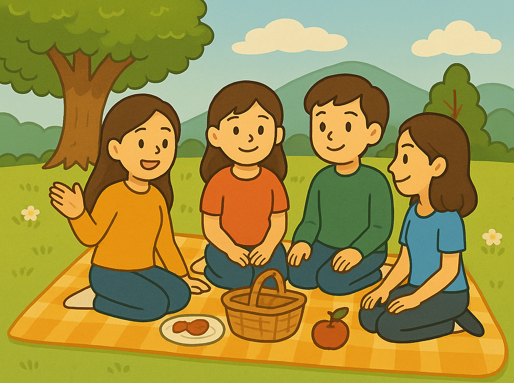
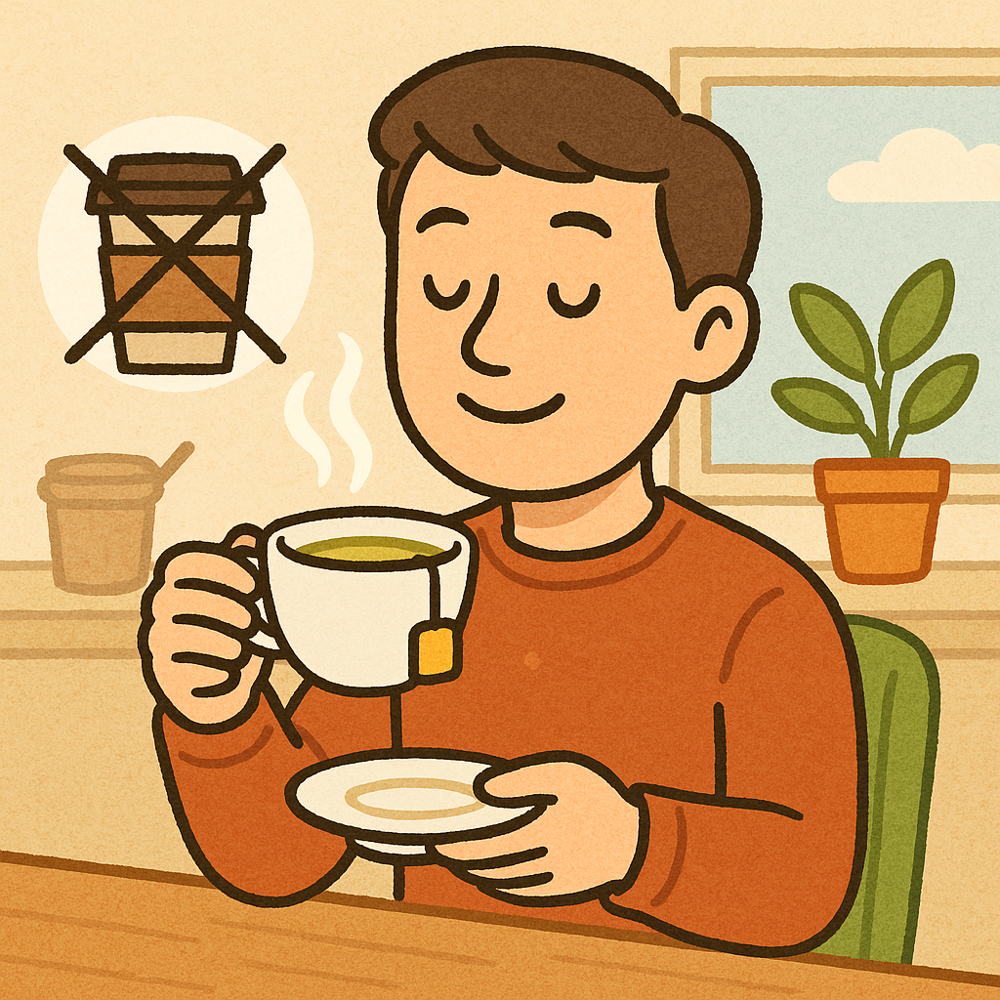

윤아 씨는 오늘 친구들과 함께 공원에 가려고 했어요.
그런데 갑자기 비가 왔어요. 그래서 공원에 가지 못하고 오늘은 집에서 영화를 보기로 했어요.
그런데 갑자기 비가 왔어요. 그래서 공원에 가지 못하고 오늘은 집에서 영화를 보기로 했어요.
공원에 가는 대신에 집에서 영화를 봤어요.
(동사)＋-는 대신에
공원에 가는 대신에 집에서 영화를 봤어요.
가다 → 가 ＋ -는 대신에 → 가는 대신에
입다 → 입 ＋ -는 대신에 → 입는 대신에
듣다 → 듣 ＋ -는 대신에 → 듣는 대신에
(동사)＋-는 대신에
"놀다, 만들다, 살다" 같은 동사는 ‘ㄹ’이 없어져요!
친구들과 노는 대신에 가족과 시간을 보내요.
놀다 → 노 ＋ -는 대신에 → 노는 대신에
만들다 → 만드 ＋ -는 대신에 → 만드는 대신에
살다 → 사 ＋ -는 대신에 → 사는 대신에
(명사)＋대신에

앞의 것 말고, 뒤의 것을 선택해요.
커피 대신에 따뜻한 차를 마셔요.
문장을 듣고 따라서 읽어 봅시다.
문장을 듣고 따라서 읽어 봅시다.
문장을 듣고 따라서 읽어 봅시다.
'-는 대신에'를 사용해서 빈 칸에 알맞게 쓰십시오.


식당에서 점심을 _________ 집에서 직접 요리를 해요.(먹다)